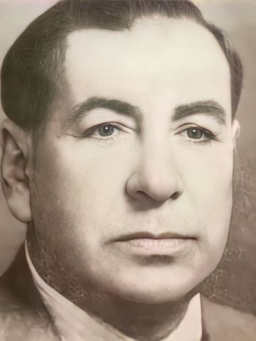

عبدالوهاب عيسى القطامي
١٨٩٨ إلى ١٩٦٧
سيرة مختصرة
تعلم النوخذة عبدالوهاب بن عيسى القطامي البحر من أبيه عيسى، وصار من ملاحي الكويت الحقيقيين. قاد بوم ابن رشدان، وقاد مع أخيه يوسف بوم سمحان الكبير في رحلات طويلة إلى الهند وعدن وشرق أفريقيا. وفي سنة ١٩٣٨ شهد له ضابط بريطاني على السفينة شورهام بمعرفة ممتازة بالملاحة والإرشاد. وفي سنة ١٩٤٨ أضاف إلى «دليل المحتار» لأبيه ملحقا عن الصيد والسفر والتجارة البحرية.
المعلومات
- الميلاد
- ١٨٩٨، شرق، الكويت
- الوفاة
- ١٥ ديسمبر ١٩٦٧، الكويت
- الأم
- موزة شاهين محمد غانم عبدالله الغانم
- الرحلات الأولى
- أخذه والده القبطان عيسى القطامي معه للسفر وعمره عشر سنوات على بغلة تعود لعائلة العبدالجليل ليدربه على الملاحة وقيادة السفن. وبعد سنتين ركب مع عمه النوخذة عبدالعزيز القطامي، ثم مع والده على سفينتهم الجديدة الكويتية ثلاث سنوات متصلة
- أول قيادة
- في عام ١٩١٥ أصبح نوخذة لأول مرة وعمره ١٧ عاما، وقاد سفينة والده الكويتية من الهند إلى الكويت. ثم اشترى له والده بوما سافر به إلى موانئ الساحل الهندي الغربي طيلة سنوات الحرب العالمية الأولى
- بوم ابن راشدان
- اختاره التاجر محمد ثنيان الغانم ليكون قبطان السفينة المشهورة بوم ابن راشدان، فقادها برحلات إلى الهند واليمن والسواحل الأفريقية الشرقية حتى أصبحت سفينة الكويت الأولى في الثلاثينات. وسلمها لأخيه النوخذة يوسف عام ١٩٣٨
- بوم ابن راشدان
- بُني «بن رشدان» للتاجر حمد الصقر نحو سنة ١٩٢٠ وباعه لمحمد ثنيان الغانم وأخويه ثنيان وشاهين، وكان أول نواخذته عبدالوهاب بن عيسى القطامي وسُمّي «سمحان» أو «غالب»، ثم انتقل إلى أخيه يوسف بن عيسى، وبيع سنة ١٩٤٣ بمبلغ ١٤٠٠٠ روبية في ميناء كنج (أبو أحمد، كما نُقل في إنستغرام)
- إنقاذ ١٩٣٦
- اختاره محمد ثنيان الغانم رئيسا لعدد من نواخذة الكويت في رحلة إنقاذ السفينة الكويتية بوم ولد مبارك والعودة بها إلى الكويت
- ١٩٣٨
- في صيف ١٩٣٨ تفوق في اختبار الملاحة الذي أجراه قبطان السفينة البريطانية شورهام عند زيارتها لبندر الكويت. ثم ترك قيادة السفن وتوظف مديرا عاما لبلدية الكويت، وبعد أحداث المجلس عام ١٩٣٨ غادر الكويت وسكن البصرة عدة سنوات، البصرة، العراق
- التجارة
- عاد إلى الكويت عام ١٩٤٣ وعمل بالتجارة بين الكويت والهند حتى عام ١٩٤٨
- التجارة
- في ١٦ يونيو ١٩٤٣ ذهب أحمد البشر الرومي مع أخيه علي إلى الباخرة لمقابلة عبدالوهاب بن عيسى القطامي عند قدومه (المذكرات، ص ٩٨)
- الكتابة
- أضاف ملحقا في كتاب والده «دليل المحتار في علم البحار» عن الغوص والسفر الشراعي الكويتي
- مقابلة
- سجل مقابلة في برنامج «صفحات من تاريخ الكويت» عام ١٩٦٥
- آلن فاليرز
- في عام ١٩٦٧ زار القبطان آلن فاليرز الكويت للمرة الثانية وكان النوخذة عبدالوهاب على فراش المرض، فكتب عن ذلك في مقدمة كتابه «أبناء السندباد»
- البحر
- وهو يعمل في البصرة جهز البوم «اليارديلة» بالتمر لرحلة النوخذة إبراهيم العثمان إلى الهند، د. عبدالمحسن عبدالله الخرافي، العثمان: مدرسة السفر الشراعي في الكويت، ص ١٥٤
- البحر
- لما اصطدم بوم «ولد مبارك» بشعاب قرب ميناء المنامة سافر قباطنة الكويت وتجارها إلى البحرين على ظهر سفينة (ربما جالبوت اليازي) بقيادة النوخذة عبدالوهاب بن عيسى القطامي، وأشرفوا على إصلاح السفينة حتى عادت سالمة إلى الكويت، د. يعقوب يوسف الحجي، صناعة السفن الشراعية في الكويت، ص ٢٠١
- البحر
- حاز على شهادة من الأسطول الملكي البريطاني عام ١٩٣٨ (خالد سالم محمد، المصنفات الملاحية، مجلة البيان، ص ٦٥)
- البحر
- تعلم على يده سليمان عبدالعزيز العمر «النوخذة» حين أبحر على بوم الصقر إلى الهند (د. عبدالمحسن الخرافي، مربون من بلدي، ص ٧١٩)
- هوشة خور ميان ١٩٣٣
- في سنة ١٩٣٣ وقعت مشاجرة في بندر «خور ميان» بالهند بين البحارة الكويتيين وأهل البلد، وكان من سفن الكويت هناك بوم ابن رشدان بقيادة النوخذة عبدالوهاب القطامي (فؤاد إبراهيم بوعركي، السفر الشراعي والملاحة في كويت الماضي، صفحة ٣٣٦). والكتاب لا يذكر اسم أبيه، وكان ابن رشدان سفينته في الثلاثينات
- سمحان
- يكتب الحجي أن بوم سمحان، وحمولته نحو ٣٧٥ طنا، وربما كان أجمل بوم سفر بُني في الكويت، قاده عبدالوهاب وأخوه يوسف. بناه الحاج سلمان سنة ١٩١٧ لحمد الصقر، فأعجب به محمد بن رشدان عند تدشينه واشتراه باثنين وأربعين ألف روبية. وفي سنة ١٩٣٩ سبق ثماني سفن من مطرح إلى المنامة. وبيع نحو ١٩٤٣ لتاجر فارسي من بندر كنك، وبعد سنوات قليلة غرق على شعاب عند مدخل لامو (يعقوب يوسف الحجي، The Art of Dhow-building in Kuwait، ص ١٢٤ و١٢٥)
- ملاح
- يذكره د. يعقوب الحجي بين ملاحي الكويت الحقيقيين، فالنجدي نفسه أخبر فاليرز أن عبدالوهاب القطامي منهم، وشهادة الملاحة التي أعطاه إياها ملازم من السفينة شورهام في ٢ يوليو ١٩٣٨ تقول إن له «معرفة ممتازة بالفنين». ويكتب الحجي أن فاليرز لو أبحر مع عبدالوهاب القطامي لا مع النجدي «لظهرت صورة أكثر إيجابية عن الإبحار والملاحة الكويتية» (أنتوني كونستابل ووليم فيسي (تحرير)، The Principles of Arab Navigation، دار أرابيان ببليشنغ، ٢٠١٣، ص ٨٤ و٨٩ و٩٠)
- ملاح
- يصفه محرر مذكرات الرومي بأنه نوخذة من النواخذة المشهورين وحاصل على شهادة إنجليزية، وهو نجل المرحوم عيسى القطامي صاحب كتاب دليل المحتار في علم البحار (المذكرات، ص ١١٤، الحاشية ١)
- الإقامة
- يذكره الرومي في الزبير والبصرة: الغداء في بيته بالزبير في يوليو ١٩٤٦، وفي يوليو ١٩٥٢ كان في انتظار عائلة الرومي في مطار البصرة وأخذهم بسيارته إلى بيته (المذكرات، ص ١١٤ و١١٥ و١٧٧)، البصرة، العراق
- الإقامة
- استقبل في البصرة في مارس ١٩٥٢ الوفد الكويتي برئاسة أحمد البشر وشاركهم الغداء في فندق جبهة النهر («الوفد الكويتي إلى العراق»، ص ٢٥٣ و٢٦٦)، البصرة، العراق
- المؤلفات
- حقق وطبع كتاب والده «دليل المحتار في علم البحار» طبعة جديدة وأضاف إليه ملحقا من تأليفه باسم «الصيد والتنقل والتجارة في البحار» (مجلة البيان، ص ٦٥)
- المؤلفات
- وضع «معجم المصطلحات البحرية» ملحقا بآخر كتابه «الصيد والتنقل والتجارة في البحار» الملحق بكتاب والده دليل المحتار، الطبعة الرابعة، ص ٢٦٥ (كما تذكر مجلة الوثيقة، البحرين، يناير ١٩٩٦)
- المصدر
- حساب alghanim_history، ١٨ أبريل ٢٠٢١
العائلة
- الأب
- عيسى عبدالوهاب القطامي
- الأم
- موزة شاهين الغانم
- الزوج
- آمنة عبدالعزيز القطامي
- الأبناء
- سبيكة عبدالوهاب القطامي، رقية عبدالوهاب القطامي، عبداللطيف عبدالوهاب القطامي، شريفة عبدالوهاب القطامي، غنيمة عبدالوهاب القطامي، نجاة عبدالوهاب القطامي